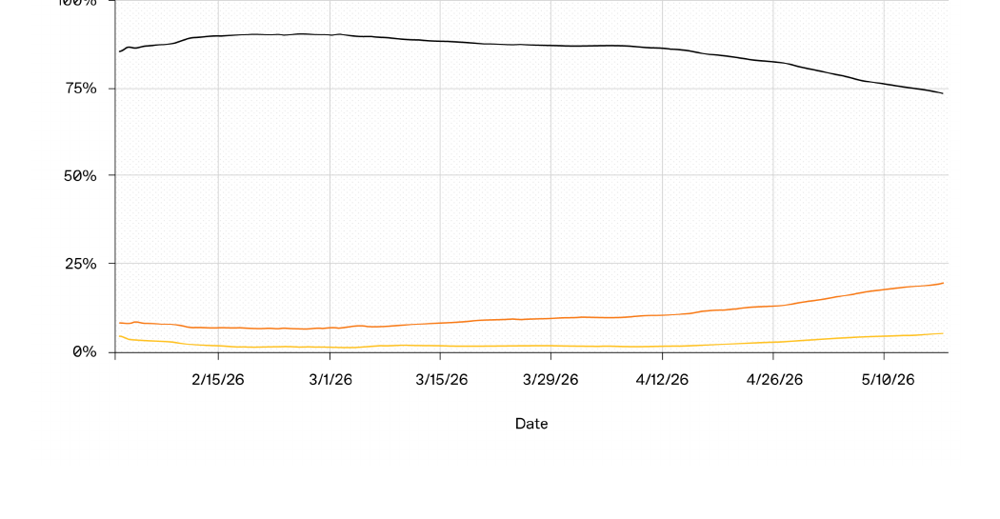

OpenAI가 코드 에이전트 Codex의 사용 데이터를 공개했습니다. 주간 사용자는 500만 명, 데스크톱 앱 출시 후 4개월 만에 6배 늘었습니다.
핵심은 사용자 구성입니다. 지식 노동자가 개발자보다 3배 빠르게 이 도구를 받아들이고 있습니다. 개발자와 지식 노동의 업무 경계가 흐려집니다.
일이 필요한 사람이 직접 도구를 만들기 시작하면, 자료를 옮기고 승인하던 조직의 중간 층이 줄어듭니다. 작은 팀이 큰 조직의 일을 합니다.
그동안 당신 조직의 절반은 자료를 만드는 게 아니라 옮기고 맞추고 승인받는 데 시간을 썼습니다.
그 마찰이 사라지면, 그 마찰을 처리하던 자리도 함께 사라집니다.
AI 코딩 도구는 개발자의 것이라고 생각하기 쉽습니다. Codex라는 이름부터 코드를 떠올리게 합니다. 그런데 이 도구를 가장 빠르게 받아들이는 집단은 개발자가 아닙니다.
OpenAI 자체 데이터에 따르면 지식 노동자의 도입 속도가 개발자의 3배입니다. 제품 기획자가 대시보드를 직접 만듭니다. 연구자가 데이터 정리 스크립트를 스스로 짭니다. "개발자에게 요청하던 일"을 본인이 처리합니다.
이 변화는 일자리 숫자가 아니라 일의 구조를 바꿉니다. 누가 무엇을 하느냐의 경계가 녹고 있습니다. 경영 리더가 봐야 할 신호는 기술이 아니라 이 경계의 이동입니다.
지식 노동은 선진 경제의 절반을 차지합니다. 미국 노동자의 40% 이상, 약 7,200만 명이 정보를 다루는 일을 합니다. 그런데 이들은 시간의 상당 부분을 "진짜 일"이 아니라 자료를 찾고 맞추고 승인받는 데 씁니다. 맥킨지글로벌연구소에 따르면 지식 노동자는 업무 시간의 28%를 이메일에, 20%를 내부 정보 찾기에 씁니다. AI 에이전트가 이 마찰을 줄이면, 조직이 그 마찰을 처리하려고 만든 자리도 함께 흔들립니다.
먼저 데이터의 성격을 짚습니다. 이 통계는 OpenAI가 자사 제품 Codex를 홍보하며 공개한 사용 데이터입니다. 일반 노동자가 아니라 이미 AI에 적극적인 사용자 집단의 수치입니다. 그 한계를 감안하더라도, 지식 노동의 변화 방향을 읽는 신호로는 충분합니다.
첫째, 가장 빠르게 늘어나는 사용자는 개발자가 아닙니다. 지식 노동자는 현재 Codex 사용자의 약 20%이며, 개발자보다 3배 빠르게 늘고 있습니다. 개인 사용자도 5%를 넘었고, 4배 빠르게 증가합니다. 제품 기획, 디자인, 리서치, 학계가 여기 들어갑니다. 아래 그래프를 보면 개발자 비중(검정선)은 88%에서 74%로 내려갑니다. 지식 노동자(주황선)는 꾸준히 올라옵니다.

출처: OpenAI (2026), The Next Era of Knowledge Work, "Codex Persona Share Over Time"
둘째, 개발자 일과 지식 노동의 경계가 사라집니다. 지식 노동자 사용자의 주간 업무를 보면 경계가 흐려진 게 보입니다. 매주 72%가 문서·보고서 같은 산출물을 만듭니다. 그런데 엔지니어링 운영(47%), 코드 구현(46%), 리서치(41%)가 바로 뒤를 잇습니다. 개발자는 문서를 만들고, 지식 노동자는 코드를 짭니다. 제품 기획자가 다른 팀에 의뢰하지 않고 대시보드를 직접 만드는 식입니다.
| 업무 유형 (지식 노동자) | 주간 사용 비율 | 주간 성장률 |
|---|---|---|
| 지식 산출물 (문서·보고서·계약서) | 72% | +36% |
| 엔지니어링 운영 | 47% | +22% |
| 코드 구현 | 46% | +27% |
| 애플리케이션 관리 | 42% | +32% |
| 리서치 | 41% | +37% |
| 코드 이해 | 35% | +15% |
| 데이터 분석 | 27% | +110% |
| 협업 | 23% | +27% |
| 코드 검증 | 16% | +23% |
| 사업 부서 업무 | 15% | +23% |
지식 노동자의 주간 업무 침투율과 주간 성장률(WoW). "주간 사용 비율"은 한 주에 해당 업무를 한 번이라도 수행한 사용자 비율입니다. 데이터 분석이 성장률 1위(+110%), 지식 산출물이 사용 비율 1위(72%)입니다. 출처: OpenAI (2026), Table: Knowledge Worker Weekly Task Penetration / Fastest-growing tasks.
셋째, 가장 빠르게 크는 일은 데이터 분석과 리서치입니다. 성장률 1위는 데이터 분석으로 주간 110%씩 늘고 있습니다. 리서치(+37%)와 문서 작성(+36%)이 뒤를 잇습니다. 모두 과거에는 "분석가에게 맡기던" 일입니다. 이제 일에 가장 가까운 사람이 직접 처리합니다.
넷째, 일하는 방식이 순차에서 병렬로 바뀝니다. 가장 의미 있는 변화입니다. 이제 사용자의 약 50%가 하루 중 한 번은 여러 작업을 동시에 돌립니다. 4월 중순의 3분의 1 미만에서 빠르게 올랐습니다. 한 사람이 데이터를 점검하면서, 동시에 스크립트를 짜고, 보고서를 조립하고, 앱을 확인합니다. 한 명의 지식 노동자가 작은 팀처럼 일합니다. 사람이 단일 작업을 실행하던 자리에서, 여러 작업 흐름을 지휘하는 자리로 옮겨갑니다.
다섯째, 이것은 사무실의 "공장 재설계"입니다. 경제학자 로버트 솔로는 "컴퓨터 시대는 생산성 통계만 빼고 어디서나 보인다"고 했습니다. 이 수수께끼가 생산성 역설입니다. 에릭 브린욜프슨은 답을 정리했습니다. 정보 기술은 조직이 일하는 방식을 다시 설계할 때만 큰 성과를 냅니다. 공장은 증기기관 자리에 전기 모터를 끼워 넣기만 했을 때는 생산성이 오르지 않았습니다. 기계마다 모터를 붙이고 작업 동선을 다시 짠 뒤에야 올랐고, 거기엔 수십 년이 걸렸습니다.
대규모 조직은 자료를 만들고 옮기는 비용을 중심으로 설계됐습니다. 비서실, 부서 간 조율팀, 사무직 피라미드, 긴 결재 라인이 그 비용을 처리하려고 존재합니다. AI 에이전트는 그 병목을 산출물 생산 전·중·후에서 함께 녹입니다. 이것이 생존 관점의 핵심입니다. 자료를 옮기던 중간 층이 줄어듭니다.
여섯째, 작은 팀이 큰 조직의 일을 합니다. 보고서가 든 사례가 이를 보여줍니다. 한 소규모 팀은 약 9만 개 정부 기관에 흩어진 공공 정보를 모아 검색 가능한 형태로 만듭니다. 과거 며칠씩 걸리던 일이 몇 분으로 줄었습니다. 5인 스타트업은 고객별 맞춤 제안과 시제품을 빠르게 만들어 자기 규모를 훨씬 넘는 경쟁을 합니다. 한 수학 교수는 강의 행정 업무를 자동화해 매주 4~5시간을 아낍니다. 패턴은 같습니다. 더 적은 사람이 더 넓은 일을 합니다.
이 사례들은 남의 회사 이야기가 아닙니다. 당신 조직에서 지금 "사람이 없어서 못 한다"고 미뤄둔 일을 떠올려 보십시오. 그 일이 데이터 정리, 자료 취합, 반복 보고라면 이미 한 사람과 에이전트로 시작할 수 있는 일일 가능성이 높습니다.
마찰의 비용은 추상적이지 않습니다. 맥킨지글로벌연구소에 따르면 지식 노동자는 업무 시간의 28%를 이메일 관리에 씁니다. 내부 정보와 담당자를 찾는 데 약 20%를 더 씁니다. 둘을 합치면 근무 시간의 절반에 가깝습니다.
간단한 예시로 환산해 봅니다. 연봉 6,000만 원인 지식 노동자라면, 이 마찰에 묶인 인건비가 한 해 약 2,800만 원입니다. 맥킨지의 48%를 그대로 적용한 단순 추정값입니다. 10명 팀이면 한 해 약 2억 8,000만 원이 "진짜 일" 바깥에서 쓰입니다. AI 에이전트가 이 시간의 일부만 줄여도 효과는 인건비 단위로 잡힙니다.
팀원에게 한 주 동안 정보를 찾고, 버전을 맞추고, 승인을 기다린 시간을 기록하게 합니다. 막연히 "비효율"이라고 말하는 대신 비율로 잡습니다. 어디서 시간이 새는지 보이면, 어떤 일에 에이전트를 붙일지 정할 수 있습니다. (소요 시간: 한 주 기록 + 집계 1시간)
기획자나 마케터에게 반복되는 업무 하나를 고르게 합니다. ChatGPT나 Claude에게 "이 엑셀 파일에서 매주 같은 표를 뽑는 스크립트를 만들어줘"처럼 평범한 말로 요청하게 합니다. 개발자에게 의뢰하던 일을 본인이 처리하는 경험을 한 번 시킵니다. (소요 시간: 업무 1건 실습 1~2시간)
핵심 인력 한 명의 업무를 단일 작업 처리에서 여러 작업 흐름을 동시에 관리하는 형태로 바꿔봅니다. 자료 수집, 초안 작성, 검토를 에이전트에 나눠 맡기고 사람은 판단과 조립에 집중하게 합니다. 작은 팀이 큰 일을 하는 구조를 한 자리에서 시험합니다. (소요 시간: 업무 재설계 반나절)
이것은 벤더의 자사 데이터입니다. OpenAI가 Codex를 알리려고 낸 보고서입니다. 수치의 출처는 자사 사용 로그이고, 외부 검증을 거치지 않았습니다. 사용자도 이미 AI에 적극적인 집단이라 일반 노동자를 대표하지 않습니다. 방향성 신호로만 읽고, 절대 수치를 그대로 인용하지 마십시오.
"경계가 사라진다"와 "일자리가 는다"는 다릅니다. 작은 팀이 큰 일을 한다는 말은, 같은 일에 사람이 덜 필요하다는 뜻이기도 합니다. 보고서는 낙관적 톤이지만, 생존 관점에서는 중간 층 축소가 함께 옵니다. 자료를 옮기던 자리가 줄면 그 자리에 있던 사람의 역할을 다시 정의해야 합니다.
직접 만든 도구에는 검증이 필요합니다. 비개발자가 만든 스크립트를 검토 없이 쓰면 위험합니다. 잘못된 데이터 처리, 보안 구멍, 규정 위반이 숨을 수 있습니다. 승인과 검증이라는 마찰이 존재하는 데는 이유가 있습니다. 그 마찰을 없앨 게 아니라, 더 가볍고 빠른 형태로 다시 설계해야 합니다.
다음 시대의 지식 노동은 "누가 코드를 쓰느냐"가 아니라 "누가 일에 가장 가까우냐"로 나뉩니다. 자료를 옮기던 중간 층은 줄고, 일에 가장 가까운 사람의 권한은 커집니다.
Codex: OpenAI가 만든 코드·업무 자동화 에이전트입니다. 평범한 말로 작업을 설명하면 스크립트나 도구를 만들고 실행합니다. 처음에는 개발용으로 나왔으나 지금은 지식 노동 전반으로 쓰임이 넓어졌습니다.
AI 에이전트(agentic tool): 한 번의 질문에 답만 주는 챗봇과 달리, 여러 단계의 일을 스스로 계획하고 실행하는 AI입니다. 자료를 찾고, 도구를 만들고, 결과를 점검하는 일을 연이어 처리합니다.
지식 산출물(knowledge artifact): 보고서, 메모, 계약서, 대시보드처럼 지식 노동의 결과로 나오는 문서나 자료입니다. 이 글에서 "산출물을 만든다"는 이런 결과물을 생산한다는 뜻입니다.
생산성 역설(productivity paradox): 컴퓨터에 많이 투자해도 생산성 통계가 좀처럼 오르지 않던 현상입니다. 기술만 들여오고 일하는 방식을 바꾸지 않으면 성과가 나지 않는다는 교훈을 담고 있습니다.
병렬 작업(parallel tasks): 여러 작업을 하나씩 순서대로 처리하지 않고 동시에 돌리는 방식입니다. 사람은 각 흐름을 지휘하고, 실제 처리는 에이전트가 나눠 맡습니다.
- OpenAI. (2026, June). The Next Era of Knowledge Work: How Codex is helping people navigate the complexity of modern work [Report]. OpenAI. https://cdn.openai.com/pdf/the-next-era-of-knowledge-work.pdf
- McKinsey Global Institute. (2012, July). The social economy: Unlocking value and productivity through social technologies [Report]. McKinsey & Company.
- Brynjolfsson, E. (1993). The productivity paradox of information technology. Communications of the ACM, 36(12), 66–77.
- Drucker, P. F. (1959). Landmarks of Tomorrow. Harper & Brothers.